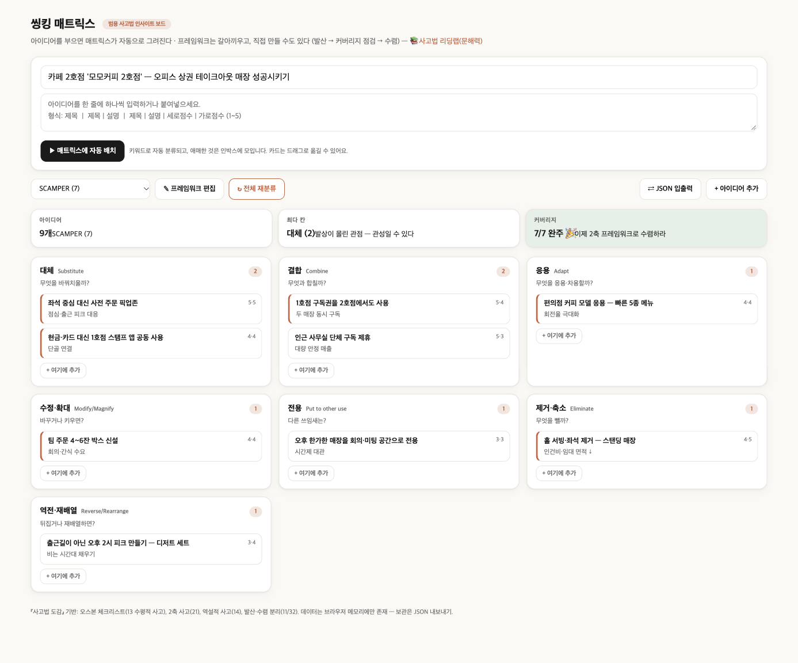

가상 사례 · 🍽️ 먹거리
☕ ‘모모커피 2호점’ 카페 2호점
목표: 오피스 상권 테이크아웃 매장 성공시키기 — SCAMPER 7가지 질문으로 아이디어 9개를 정리했습니다.
핵심 3가지
S 대체 사전 주문 픽업존 → 피크 시간 줄 서는 시간이 사라진다
C 결합 1호점 구독권 공용 → 두 매장이 서로 단골을 키운다
E 제거 홀 서빙·좌석 제거 → 작은 면적·적은 인원으로 운영
완성 보드

렌즈별 아이디어
효과·실현성은 1~5점의 예시 점수입니다. ⭐는 둘 다 4점 이상 — “우선 실행” 후보.
대체Substitute2
무엇을 바꿔치울까?
-
좌석 중심 대신 사전 주문 픽업존점심·출근 피크 대응⭐ 효과 5 · 실현 5
-
현금·카드 대신 1호점 스탬프 앱 공동 사용단골 연결⭐ 효과 4 · 실현 4
결합Combine2
무엇과 합칠까?
-
1호점 구독권을 2호점에서도 사용두 매장 동시 구독⭐ 효과 5 · 실현 4
-
인근 사무실 단체 구독 제휴대량 안정 매출효과 5 · 실현 3
응용Adapt1
무엇을 응용·차용할까?
-
편의점 커피 모델 응용 — 빠른 5종 메뉴회전율 극대화⭐ 효과 4 · 실현 4
수정·확대Modify/Magnify1
바꾸거나 키우면?
-
팀 주문 4~6잔 박스 신설회의·간식 수요⭐ 효과 4 · 실현 4
전용Put to other use1
다른 쓰임새는?
-
오후 한가한 매장을 회의·미팅 공간으로 전용시간제 대관효과 3 · 실현 3
제거·축소Eliminate1
무엇을 뺄까?
-
홀 서빙·좌석 제거 — 스탠딩 매장인건비·임대 면적 ↓⭐ 효과 4 · 실현 5
역전·재배열Reverse/Rearrange1
뒤집거나 재배열하면?
-
출근길이 아닌 오후 2시 피크 만들기 — 디저트 세트비는 시간대 채우기효과 3 · 실현 4
먼저 시작하기 좋은 것 (6개)
- 대체 좌석 중심 대신 사전 주문 픽업존 — 점심·출근 피크 대응
- 대체 현금·카드 대신 1호점 스탬프 앱 공동 사용 — 단골 연결
- 결합 1호점 구독권을 2호점에서도 사용 — 두 매장 동시 구독
- 응용 편의점 커피 모델 응용 — 빠른 5종 메뉴 — 회전율 극대화
- 수정·확대 팀 주문 4~6잔 박스 신설 — 회의·간식 수요
- 제거·축소 홀 서빙·좌석 제거 — 스탠딩 매장 — 인건비·임대 면적 ↓
내 가게로 바꿔서 해보기
- 씽킹 매트릭스를 엽니다.
- ⇄ JSON 입출력 → 아래 JSON을 붙여넣고 불러오기.
- 가게 이름·아이디어를 내 것으로 바꾸고, 빈 칸을 채웁니다.